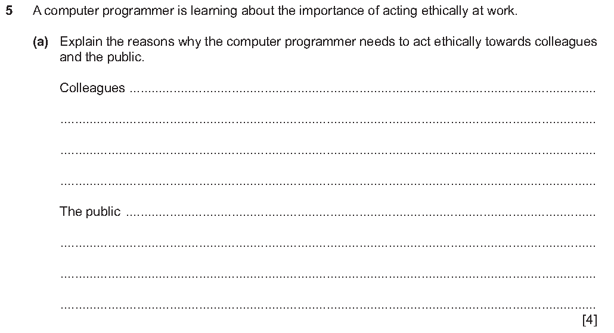
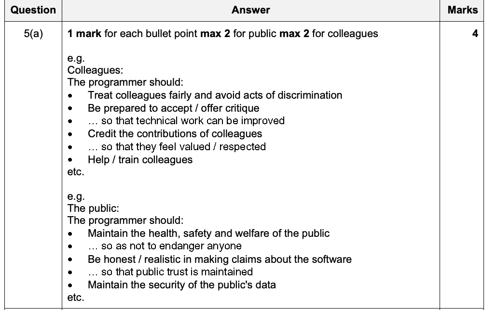
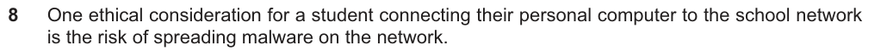
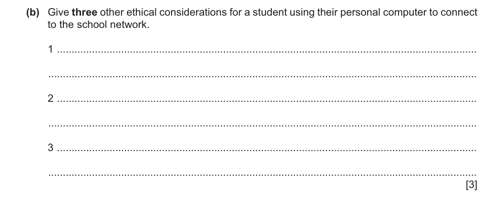
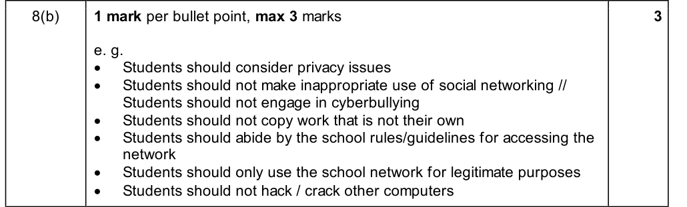

7.1.2
Ethical and unethical actions
Responsibilities towards colleagues and the public
Start with the people specified by the question. A stakeholder is someone affected by a decision or with an interest in it. An ethical answer identifies an action and explains its effect on that person or group.
| People affected | Responsible action | Reason or effect |
|---|---|---|
| Colleagues | Offer and accept constructive criticism. | Help colleagues improve the quality of their work. |
| Colleagues | Treat people fairly and acknowledge their contributions. | Avoid discrimination and show that their work is valued. |
| Colleagues | Help with training and professional development. | Support the competence of the team. |
| Public | Protect health, safety and personal information. | Reduce foreseeable harm and inappropriate disclosure. |
| Public | Describe software capabilities honestly and realistically. | Allow people to make informed decisions and maintain justified trust. |
Past paper · responsibilities towards two groups
Original question · Cambridge 9618/12
1. Apply ethical responsibilities to two groups
Cambridge 9618/12 · October/November 2024 · 5(a) · 4 marks
Selected parts: 5(a) [4].
Original question

Reading the question — teacher guidance
Address colleagues and the public separately. A long answer about only one group is capped at two marks.
Solution / model answer — teacher-written
Towards colleagues, the programmer should give constructive criticism so that their colleagues can improve their work. Towards the public, the programmer should be honest and realistic about what the software can do so that the public can trust the claims made about it.
Official mark scheme

Why this earns marks — teacher explanation
The scheme allows at most two marks for colleagues and two for the public. Each sentence gives an action and its consequence. Other accepted actions include fair treatment, giving credit and protecting public health or personal information.
Common mistakes — teacher analysis
A general statement such as “be ethical to everyone” does not show how the responsibility applies to either group.
Cambridge past-paper access page ↗ · Source references and page numbers are shown with each extract. © Cambridge University Press & Assessment / UCLES.
Compare ethical and unethical choices in the same situation
Teacher-written situation: a programmer finds that a hospital appointment system sometimes shows the wrong patient’s record. A manager asks them to hide the failed test so the software can be delivered on time.
Ethical action
Record the failed test, inform authorised project leads and recommend correction before using the affected function.
Unethical action
Remove the failed result and tell the client that all tests passed.
Acting ethically can cause an immediate delay or extra testing cost. Those costs do not erase the duty to protect patients and report accurately. Acting unethically may meet a short-term deadline while damaging privacy, trust and professional reputation.
Teacher-written check
Why is “the programmer might get in trouble” an incomplete explanation of this situation?
Check your reasoning
It ignores the patients and the concealed evidence. Explain how hiding the failed test can cause the client to rely on the faulty system, risking inappropriate disclosure or use of patient records.
Ethical use of a school network
| Accepted consideration | What it means in this setting |
|---|---|
| Respect privacy | Do not browse or disclose another pupil’s private information without authority. |
| Avoid cyberbullying | Do not use network messages to intimidate or harass others. |
| Avoid plagiarism | Do not present another person’s work as your own. |
| Follow school rules and use the network lawfully | Use accounts and network services for the permitted purposes. |
| Do not hack other computers | Do not access another computer or account without permission. |
Past paper · three other ethical considerations
Original question · Cambridge 9618/11
2. Give three other school-network ethical considerations
Cambridge 9618/11 · October/November 2025 · 8(b) · 3 marks
Selected parts: 8(b) [3].
Original question


Reading the question — teacher guidance
Read the retained opening sentence: spreading malware is already supplied. Give three other ethical considerations for a student connecting a personal computer to the school network.
Solution / model answer — teacher-written
Respect other people’s privacy; do not engage in cyberbullying; do not copy and present work that is not your own.
Official mark scheme

Why this earns marks — teacher explanation
One mark per accepted point, up to three. The scheme also accepts following school rules, using the network for legitimate purposes and not hacking other computers.
Common mistakes — teacher analysis
Repeating the supplied malware risk does not answer the request for other considerations. Three paraphrases of the same privacy point do not provide three different considerations.
Cambridge past-paper access page ↗ · Source references and page numbers are shown with each extract. © Cambridge University Press & Assessment / UCLES.
Justify a response using the actual consequences
- IdentifyWhat is being done, and who is affected?
- CompareWhat happens if the professional acts ethically or unethically?
- RespondChoose an action addressing the problem and a realistic safeguard.
- JustifyExplain how it protects the affected people, including remaining limits.
For the patient-record fault, pause the affected function, report the evidence through an authorised route and correct and retest it. Do not publish confidential records to prove that a fault exists. If work must continue, establish a checked alternative before claiming that patients can safely use it.
Teacher-written check
The same program is used only with invented records in a closed demonstration. Should the response be identical?
Check your reasoning
The immediate privacy risk is reduced because no real patient data is involved. Report the limitation honestly and label the demonstration appropriately. The changed setting can justify a different use, but it does not justify claiming that the fault has been fixed.